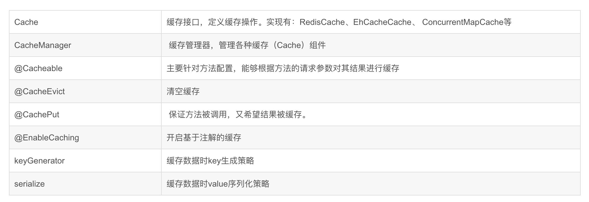
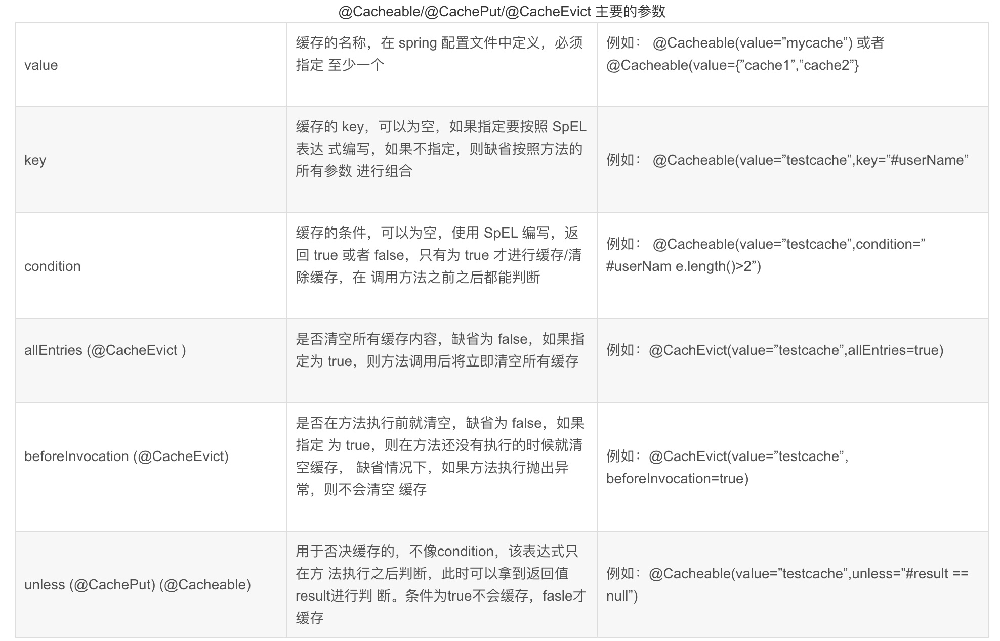
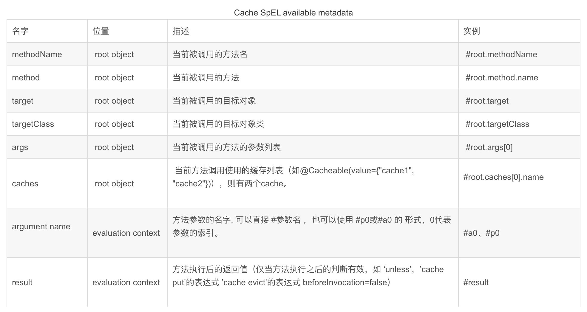

1.12.1. Spring Boot ehcache使用与整合
Ehcache 也是 Java 领域比较优秀的缓存方案之一Spring Boot 中对此也提供了很好的支持，这个支持主要是通过 Spring Cache 来实现的。
ehcache是一种广泛使用的开源Java分布式缓存。主要面向通用缓存,Java EE和轻量级容器。它具有内存和磁盘存储，缓存加载器,缓存扩展,缓存异常处理程序,一个gzip缓存servlet过滤器,支持REST和SOAP api等特点。
项目地址:https://github.com/heng1234/springboot2.x/tree/master/boot_cache
Spring cache缓存注解介绍



1.12.1.1. @CacheConfig
这个注解在类上使用，用来描述该类中所有方法使用的缓存名称，当然也可以不使用该注解，直接在具体的缓存注解上配置名称
1.12.1.2. @Cacheable
这个注解一般加在查询方法上，表示将一个方法的返回值缓存起来，默认情况下，缓存的 key 就是方法的参数，缓存的 value 就是方法的返回值。
1.12.1.3. @CachePut
这个注解一般加在更新方法上，当数据库中的数据更新后，缓存中的数据也要跟着更新，使用该注解，可以将方法的返回值自动更新到已经存在的 key 上
1.12.1.4. @CacheEvict
这个注解一般加在删除方法上，当数据库中的数据删除后，相关的缓存数据也要自动清除，该注解在使用的时候也可以配置按照某种条件删除（ condition 属性）或者或者配置清除所有缓存（ allEntries 属性）
开始使用ehcache
pom.xml引入
<!--spring cache-->
<dependency>
<groupId>org.springframework.boot</groupId>
<artifactId>spring-boot-starter-cache</artifactId>
</dependency>
<!--ehcache-->
<dependency>
<groupId>net.sf.ehcache</groupId>
<artifactId>ehcache</artifactId>
<version>2.10.6</version>
</dependency>
yml配置
需要说明的是
config:classpath:/ehcache.xml可以不用写，因为默认就是这个路径。但ehcache.xml必须有。spring: cache: ehcache: config: classpath:ehcache.xml
ehcache.xml
在resources目录下新建config文件夹,在文件夹中建立ehcache.xml文件。
<?xml version="1.0" encoding="UTF-8"?>
<ehcache>
<defaultCache
maxElementsInMemory="10000"
eternal="false"
timeToIdleSeconds="3600"
timeToLiveSeconds="0"
overflowToDisk="false"
diskPersistent="false"
diskExpiryThreadIntervalSeconds="120" />
<cache
name="myuser"
maxEntriesLocalHeap="2000"
eternal="false"
timeToIdleSeconds="3600"
timeToLiveSeconds="0"
overflowToDisk="false"
statistics="true">
</cache>
</ehcache>
<!--配置含义：
name:缓存名称。
maxElementsInMemory：缓存最大个数。
eternal:对象是否永久有效，一但设置了，timeout将不起作用。
timeToIdleSeconds：设置对象在失效前的允许闲置时间（单位：秒）。仅当eternal=false对象不是永久有效时使用，可选属性，默认值是0，也就是可闲置时间无穷大。
timeToLiveSeconds：设置对象在失效前允许存活时间（单位：秒）。最大时间介于创建时间和失效时间之间。仅当eternal=false对象不是永久有效时使用，默认是0.，也就是对象存活时间无穷大。
overflowToDisk：当内存中对象数量达到maxElementsInMemory时，Ehcache将会对象写到磁盘中。
diskSpoolBufferSizeMB：这个参数设置DiskStore（磁盘缓存）的缓存区大小。默认是30MB。每个Cache都应该有自己的一个缓冲区。
maxElementsOnDisk：硬盘最大缓存个数。
diskPersistent：是否缓存虚拟机重启期数据。
diskExpiryThreadIntervalSeconds：磁盘失效线程运行时间间隔，默认是120秒。
memoryStoreEvictionPolicy：当达到maxElementsInMemory限制时，Ehcache将会根据指定的策略去清理内存。默认策略是LRU（最近最少使用）。你可以设置为FIFO（先进先出）或是LFU（较少使用）。
clearOnFlush：内存数量最大时是否清除。
diskStore 则表示临时缓存的硬盘目录。
-->
使用缓存 UserService
import com.boot.boot_cache.entity.User;
import com.boot.boot_cache.mapper.UserMapper;
import org.springframework.beans.factory.annotation.Autowired;
import org.springframework.cache.annotation.CacheConfig;
import org.springframework.cache.annotation.CachePut;
import org.springframework.cache.annotation.Cacheable;
import org.springframework.stereotype.Service;
import org.springframework.transaction.annotation.Transactional;
import java.util.List;
/**
* @author : kaifa
* create at: 2019-10-22 10:10
* @description: user 业务层
*/
@Service
@CacheConfig(cacheNames = "myuser")//对应ehcache.xml配置文件配置的缓存名称
public class UserService {
@Autowired
private UserMapper userMapper;
/**
* 查询所有用户
* @return
*/
@Cacheable
public List<User> selectListAll(){
return userMapper.selectListAll();
}
/**
* 修改用户
* @param user
* @return
*/
@CachePut(key = "#user.id")
@Transactional
public User updateUser(User user){
userMapper.updateUser(user) ;
return userMapper.findUserById(user.getId());//这里修改后需要查询一遍进行缓存
}
/**
* 查询所有用户
* @return
*/
@Cacheable(key = "#id")
public User findUserById(Integer id){
return userMapper.findUserById(id);
}
/* @CacheEvict(key = "#user.id")
@Transactional
public void updateUser(User user){
userMapper.updateUser(user) ;
}*/
}
UserMapper
import com.boot.boot_cache.entity.User;
import java.util.List;
/**
* @author : kaifa
* create at: 2019-10-22 10:10
* @description: user mapper接口
*/
public interface UserMapper {
/**查询所有用户*/
List<User> selectListAll();
/**
* 修改用户信息
* @param user
* @return
*/
int updateUser(User user);
/**
* 根据id查询
* @param id
* @return
*/
User findUserById(Integer id);
}
mapper.xml
<?xml version="1.0" encoding="UTF-8" ?>
<!DOCTYPE mapper PUBLIC "-//mybatis.org//DTD Mapper 3.0//EN"
"http://mybatis.org/dtd/mybatis-3-mapper.dtd">
<mapper namespace="com.boot.boot_cache.mapper.UserMapper">
<update id="updateUser" parameterType="com.boot.boot_cache.entity.User">
update T_USER
<set>
<if test="userName != null and userName != ''">
USERNAME = #{userName},
</if>
<if test="password != null and password != ''">
password = #{password},
</if>
</set>
<where>
id = #{id}
</where>
</update>
<select id="selectListAll" resultType="com.boot.boot_cache.entity.User">
select id,username,password,create_time createTime from t_user
</select>
<select id="findUserById" resultType="com.boot.boot_cache.entity.User">
select id,username userName,password,create_time createTime from t_user where id = #{id}
</select>
</mapper>
controller
import com.boot.boot_cache.entity.User;
import com.boot.boot_cache.service.UserService;
import org.springframework.beans.factory.annotation.Autowired;
import org.springframework.web.bind.annotation.RequestMapping;
import org.springframework.web.bind.annotation.RestController;
import java.util.List;
/**
* @author : kaifa
* create at: 2019-10-22 10:16
* @description: user controller
*/
@RestController
@RequestMapping("user")
public class UserController {
@Autowired
private UserService userService;
/**
* 查询所有用户
* @return
*/
@RequestMapping("userList.do")
List<User> selectListAll(){
return userService.selectListAll();
}
/**
* 修改用户
* @return
*/
@RequestMapping("updateUser.do")
String updateUser(User user){
userService.updateUser(user);
return "success";
}
/**
* 根据id查询
* @return
*/
@RequestMapping("findUserById.do")
User findUserById(Integer id){
return userService.findUserById(id);
}
}
访问http://localhost:7007/user/findUserById.do?id=1
第一次会查询数据库
第二次会进入缓存不会访问数据库
接着访问修改数据
http://localhost:7007/user/updateUser.do?id=1&userName=heng&password=1234567
然后继续访问查询会走缓存
具体看代码
项目地址:https://github.com/heng1234/springboot2.x/tree/master/boot_cache